Hofheim am Taunus
Sanierung eines Multifunktionsgebäudes
Komplettsanierung eines mehrgeschossigen Gebäudes: Rückbau, Stahlträger und neuer Dachausbau, Elektroinstallation, Fenster mit Rollläden, Trockenbau, Böden, Malerarbeiten und neue Fassade.
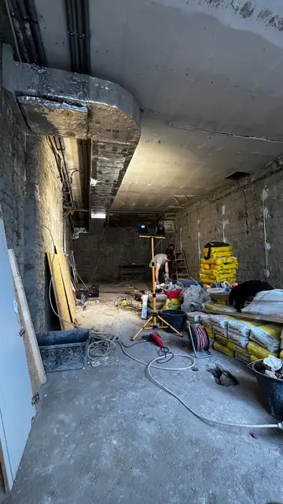
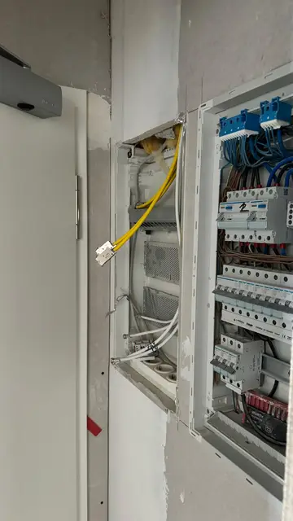
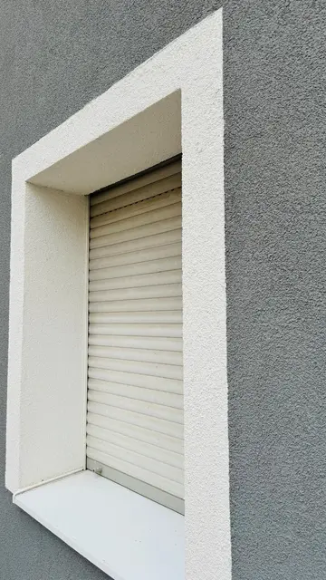
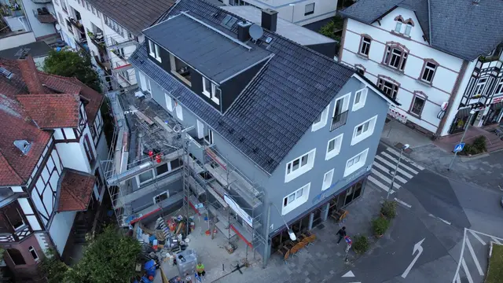
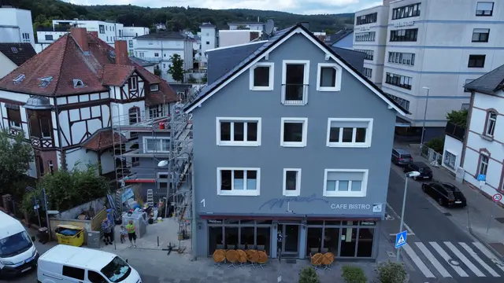
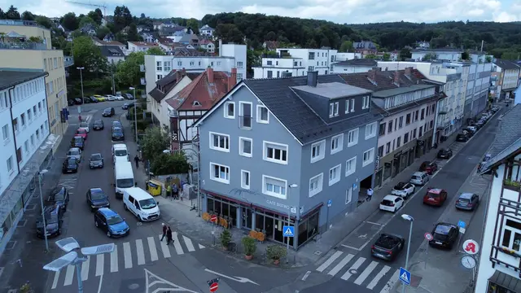
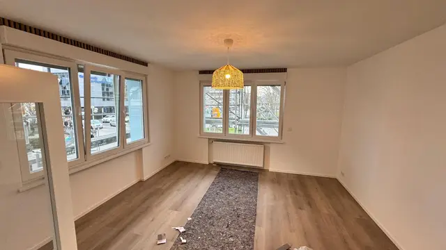
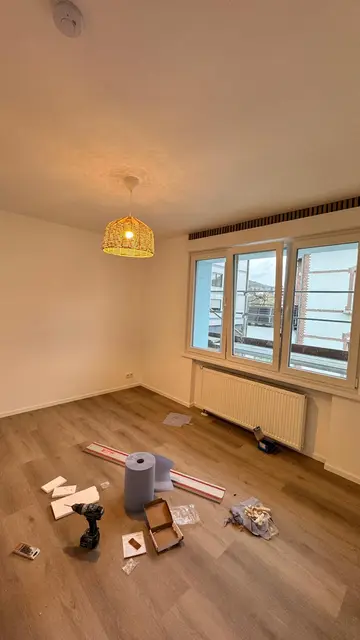
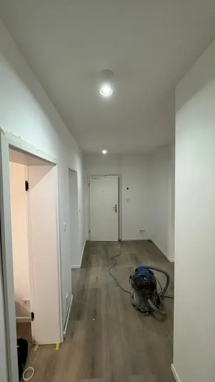
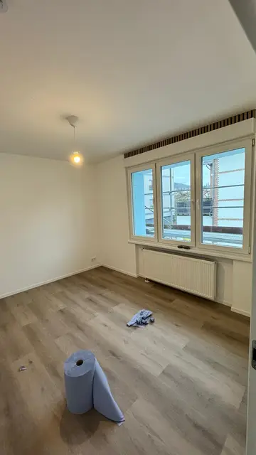
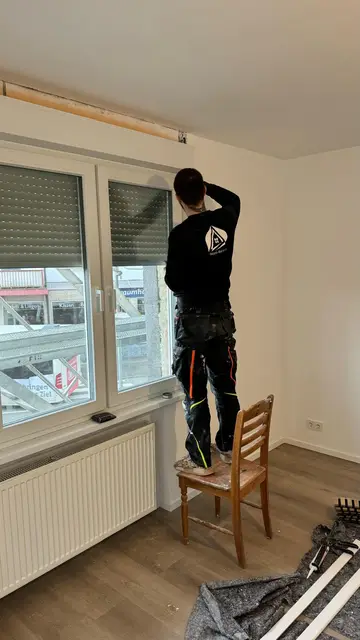
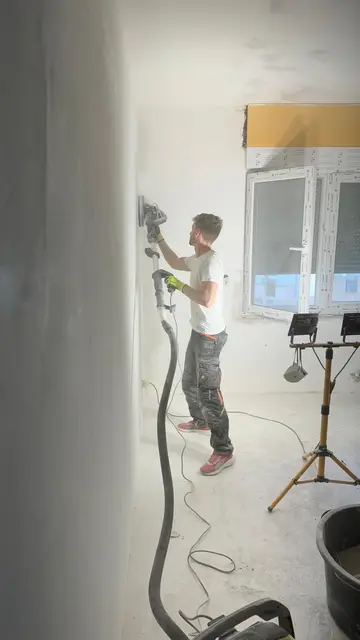
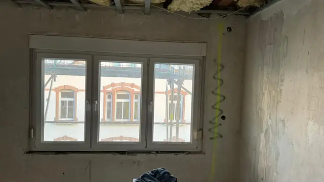
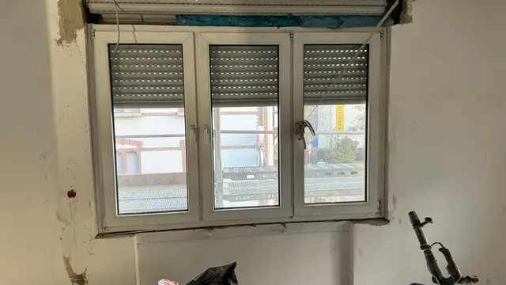
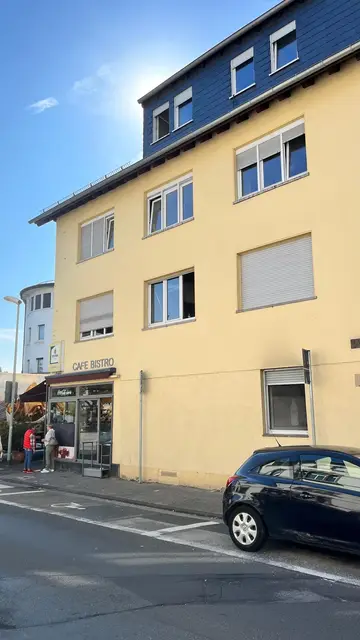
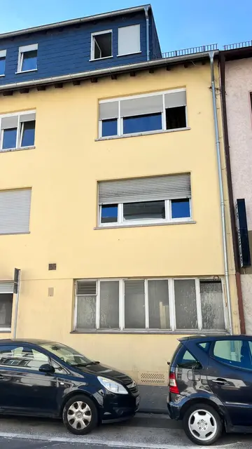
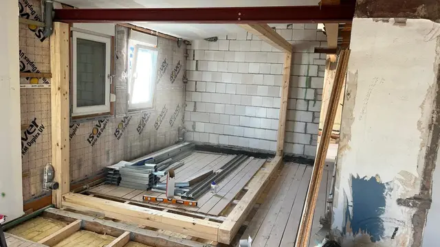
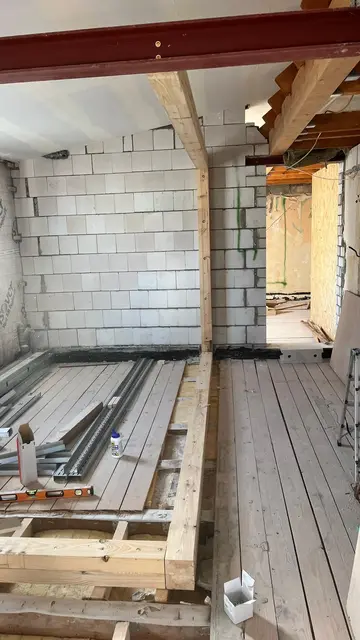
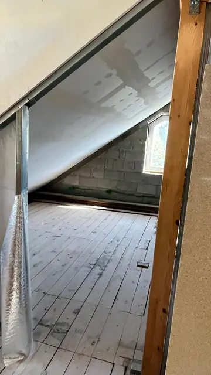
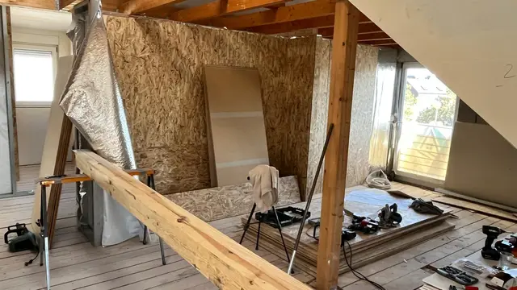
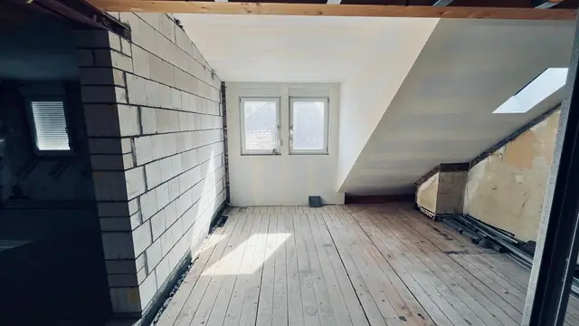
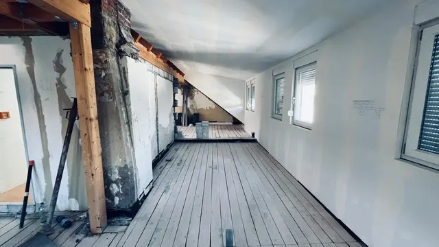
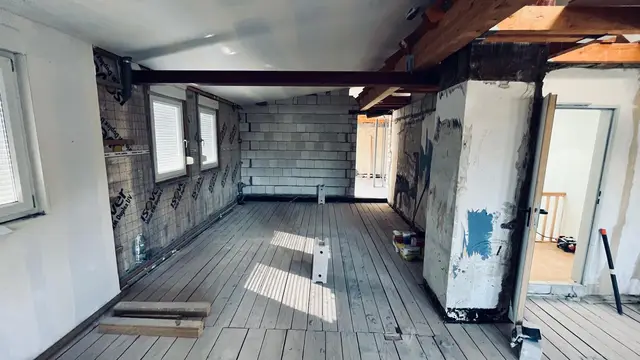
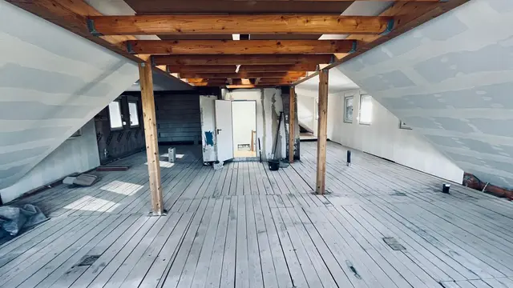
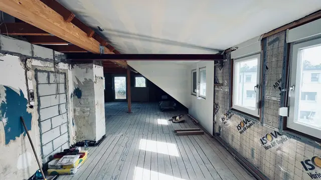
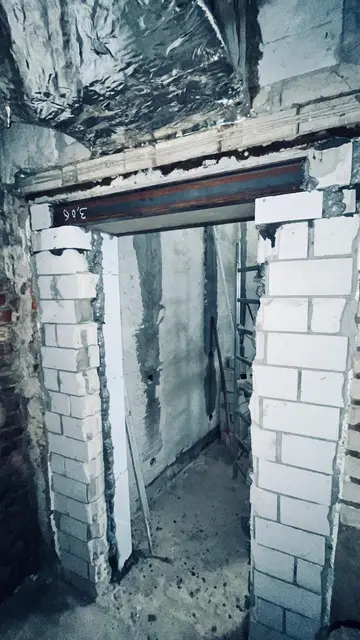
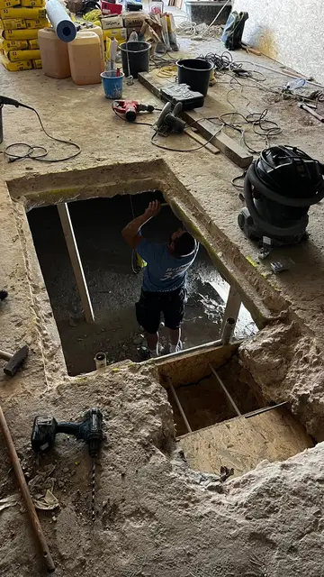
Weitere Referenzen


Sie haben ein ähnliches Projekt?
Schicken Sie uns Leistungsumfang, Baustelle und Termin. Wir melden uns zurück.